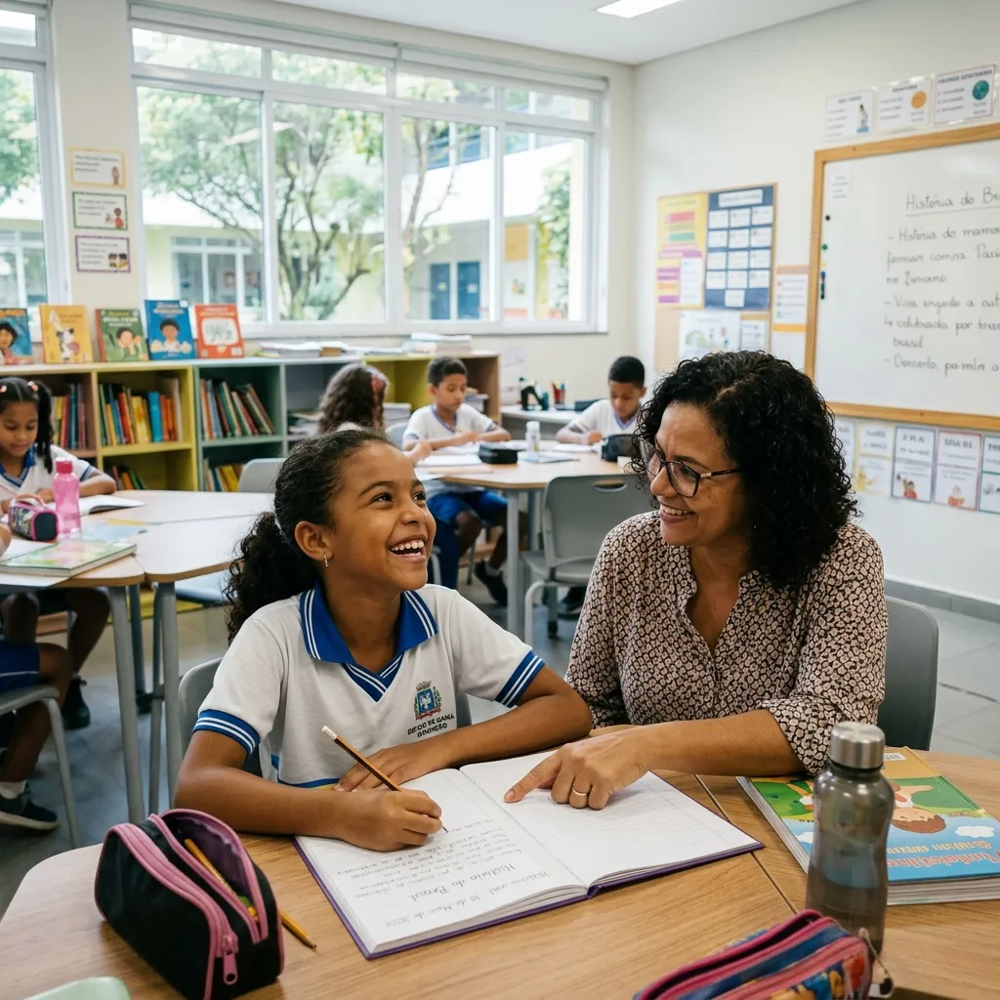

Deixe-nos preparar seu filho para as melhores oportunidades do futuro, em um ambiente totalmente seguro em Feira de Santana.

E a educação do seu filho não pode ser uma preocupação a mais.
Seu bem mais precioso protegido. Monitoramento rigoroso, portaria segura e um cuidado emocional contínuo para que você trabalhe em paz.
Eles não ficam "passando o tempo". Estão imersos no inglês, esportes e projetos que formam a disciplina, respeitando os momentos de descanso.
Seu filho não é apenas um número de matrícula. Nossa coordenação conhece os alunos pelo nome e acompanha cada dificuldade e vitória.
Nós combatemos a apatia tecnológica e o excesso de telas com atividades reais. A rotina na Prisma é viva, engajadora e focada no desenvolvimento mental e físico.
Recebemos nossos alunos com energia, garantindo que o dia comece de forma positiva e segura.
Aulas profundas utilizando a metodologia comprovada do Sistema Positivo.
Equilíbrio corporal e emocional através de atividades extracurriculares como Balé e Karatê.
Veja como é viver a Prisma
Uma jornada desenhada para formar mentes críticas, autônomas e preparadas para a vida.
Aqui a prioridade é o acolhimento, a socialização respeitosa e uma alfabetização lúdica porém estruturada, para criar independência desde os primeiros passos.
Saber maisFoco total na construção do hábito de estudos, amadurecimento emocional para lidar com desafios e aprofundamento real do idioma inglês.
Saber maisDirecionamento intensivo para UEFS, ENEM e os maiores vestibulares. Cobrança de alto nível, mantendo o acompanhamento psicológico do adolescente.
Saber maisO Ecossistema Prisma foi criado para preencher todas as lacunas do desenvolvimento moderno.
Quero conhecer a estruturaPositivo English Solution: Fluência que abre portas para o mundo.
Disciplina motora, artística e fortalecimento do corpo.
Material didático testado e aprovado em todo o Brasil.
Psicopedagogia ativa focada na saúde mental e bem-estar.
As vagas para as turmas de 2026/2027 estão sendo preenchidas. Mantemos um número restrito de alunos para garantir a excelência e o acompanhamento individualizado que o seu filho merece.
Venha tomar um café com a Coordenação